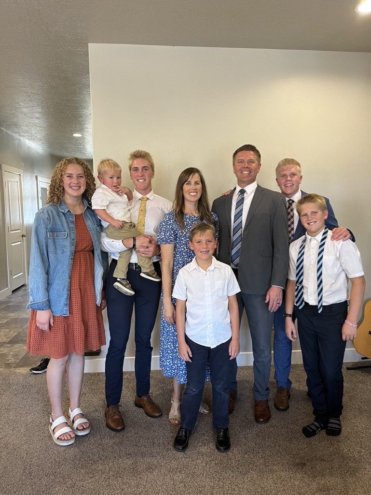
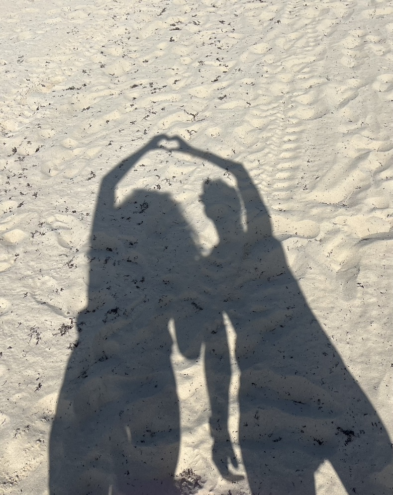

Meet the Photographer
Introducing Me
Hi! I’m Kate White, and I find joy in both the quiet and the adventurous corners of life. I love crafting things with my hands, whether that’s creating something new at home or simply noticing the small details that make life beautiful. Early mornings are one of my favorite times of day—you’ll often find me on sunrise hikes, watching the world slowly light up and feeling inspired by the stillness of nature before the day begins. When I’m not outside exploring, I enjoy spending time with my family and friends, playing volleyball, or getting lost in a good book. My faith in Jesus is a central part of who I am and shapes the way I see the world, especially through my photography. I’m passionate about capturing moments that reflect beauty, connection, and the presence of God in everyday life. Photography allows me to slow down and notice what might otherwise be overlooked—the glow of a sunset, the movement of a butterfly, or the laughter shared between people I love. I’m also deeply drawn to nature, travel, and adventure, always excited to discover new places and experiences that broaden my perspective. Through my lens, I hope to share not just images, but stories that feel real, meaningful, and full of life.



I first go into photography when I was about 14 years old and I have taken classes to help me better my skills. I want to encourage anyone who wants to try something new. You don't have to be good at it, just do it! The more practice you get, the better you'll be.